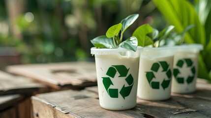

Materiais biodegradáveis: os heróis que combatem a poluição do planeta

É verdade que a quantidade de lixo no mundo parece aumentar cada dia mais, e isso vem causando impactos ambientais severos no planeta por conta da lentidão da decomposição de alguns materiais, que podem durar vários séculos.
Uma possível solução para esse problema são os materiais biodegradáveis, que são materiais alternativos que quando descartados, se decompoem muito mais rapidamente do que os convencionais.
Nesse artigo você encontrará várias informações úteis para conhecer mais sobre os materiais biodegradáveis, e entender como o seu uso pode beneficiar o meio ambiente. Continue navegando para saber mais!
Quais os benefícios de utilizar materiais biodegradáveis?
Os materiais biodegradáveis oferecem uma série de benefícios, não só ambientais mas também econômicos e sociais que os tornam uma ótima escolha para todos. Alguns dos principais benefícios que valem a pena ser ressaltados são:
- Redução da Poluição: Materiais biodegradáveis se decompõem naturalmente e muito mais rápido que os materiais convencionais, diminuindo a quantidade de resíduos em aterros e reduzindo a poluição ambiental.
- Conservação dos Recursos Naturais: A produção de materiais biodegradáveis geralmente utiliza recursos renováveis, como plantas e biomassa, contribuindo para a conservação de recursos não renováveis como o petróleo.
- Diminuição da emissão de gases nocivos: A fabricação e decomposição de materiais biodegradáveis normalmente emitem menos gases de efeito estufa em comparação com os plásticos convencionais, o que ajuda a evitar mudanças climáticas severas.
- Saúde Pública: Ao reduzir a quantidade de resíduos plásticos, os materiais biodegradáveis ajudam a diminuir a contaminação de solos e águas, prevenindo problemas de saúde causados por poluentes químicos.
- Economia Circular: Materiais biodegradáveis podem ser compostados e transformados em adubo, fechando o ciclo de vida do produto de maneira sustentável e promovendo práticas de economia circular.
- Inovação e Desenvolvimento: O desenvolvimento de tecnologias e produtos biodegradáveis promove inovação industrial e pode criar novas oportunidades de negócios e empregos no setor de sustentabilidade.
- Apoio à Educação Ambiental: O uso de materiais biodegradáveis pode fomentar a conscientização e educação sobre questões ambientais, incentivando comportamentos mais sustentáveis na sociedade.
Portanto, adotar materiais biodegradáveis é um passo essencial para construir um futuro mais sustentável, reduzindo os impactos negativos ao meio ambiente e promovendo uma coexistência mais harmoniosa com a natureza.
Como saber se um produto é biodegradável?
Verifique se o produto possui certificações de biodegradabilidade, como selos de órgãos ambientais reconhecidos. Estas certificações garantem que o produto se decomponha naturalmente no ambiente.
Leia o rótulo e a embalagem do produto para identificar materiais compostáveis, como amido de milho ou bioplástico. Produtos feitos de materiais naturais tendem a ser mais biodegradáveis.
Pesquise sobre a marca e sua política ambiental, muitas empresas sustentáveis informam claramente sobre a biodegradabilidade de seus produtos. A transparência é um bom indicador de compromisso com o meio ambiente.
Formas de utilização de materiais biodegradáveis
Os materiais biodegradáveis podem ser utilizados de diversas formas, contribuindo para a sustentabilidade em várias áreas:
- Embalagens: Sacolas plásticas, embalagens alimentares e recipientes de fast food.
- Agricultura: Filmes de cobertura (mulching) e vasos biodegradáveis para mudas.
- Produtos de Higiene e Cuidados Pessoais: Fraldas, absorventes e escovas de dentes biodegradáveis.
- Têxteis e Moda: Roupas e calçados feitos com fibras naturais biodegradáveis.
- Construção Civil: Isolantes térmicos e acústicos, e compósitos de construção biodegradáveis.
- Utensílios Domésticos: Esponjas de cozinha e escovas de limpeza biodegradáveis.
- Produtos Descartáveis: Talheres, pratos, copos e canudos biodegradáveis.
- Aplicações Médicas: Implantes, suturas e embalagens para medicamentos biodegradáveis.
- Tecnologia e Eletrônicos: Componentes eletrônicos biodegradáveis.
O uso de materiais biodegradáveis em diversos setores é uma estratégia importante para reduzir o impacto ambiental e promover a sustentabilidade.